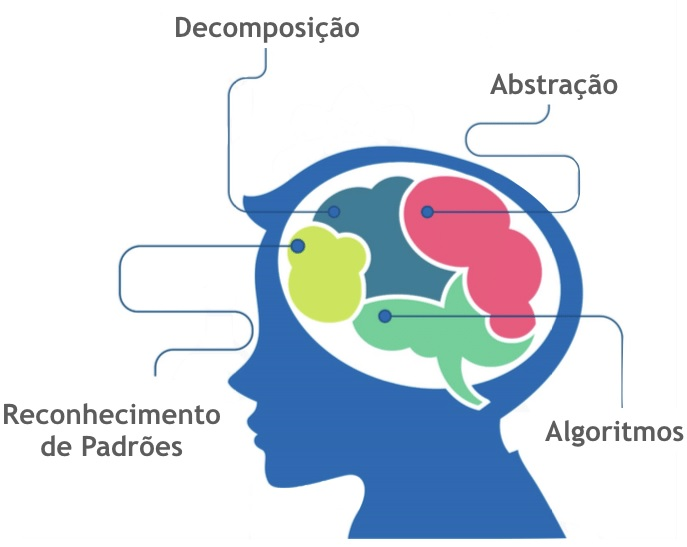

Pensamento Computacional - Colégio C.M. "Prof. José Alexandre Chiarelli"
O componente de Pensamento Computacional faz parte do Novo Ensino Médio (NEM) e esta disponível em nosso Colégio
para a 1ª Série a partir de 2022.
O pensamento computacional é um modo de pensar, com o objetivo de resolver problemas complexos. Entendemos
problemas complexos, como aqueles problemas que não possuem uma solução imediata, logo se faz necessário
dividi-lo em problemas menores, e à partir daí identificar possíveis soluções.
“É uma abordagem usada para solução de problemas utilizando o que se sabe sobre Computação” (GOOGLE FOR
EDUCATION,
2015)
“Quando aplicado em sala de aula, possibilita que o aluno possa ser o protagonista de sua própria aprendizagem,
estruturando seus próprios passos para resolver os seus problemas ou os problemas do mundo…”
Estruramos o Pensamento Computacional em 4 pilares:
- Reconhecimento de Padrões
- Abstrações
- Decomposição
- Algoritmo
